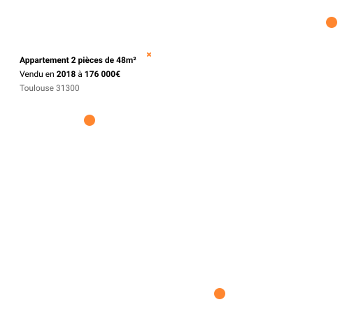
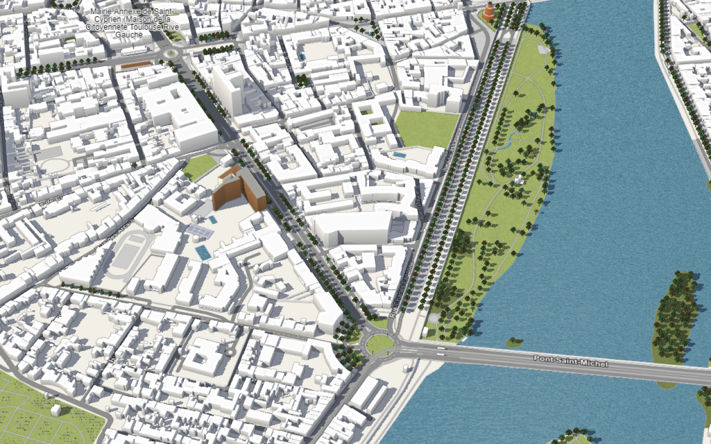

<div class="container">
    <app-header [loginPage]="true"></app-header>
    <div class="global-container">
        <div class="left-container">
            
            

            <!--  -->
            
            
            <!-- -->
            <iframe class="map" id="inlineFrameExample"
                src="https://demo.f4map.com/#lat=43.5962756&lon=1.4295161&zoom=17">
            </iframe>

            <!-- 
             -->
            <!--  -->
        </div>
        <div class="right-container">
            <router-outlet></router-outlet>
        </div>
    </div>
    <app-footer></app-footer>
</div>